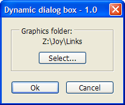
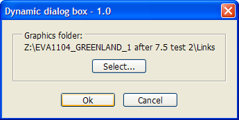
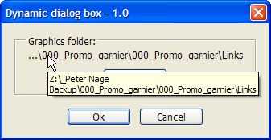
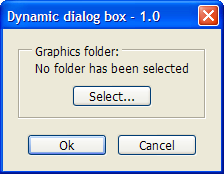
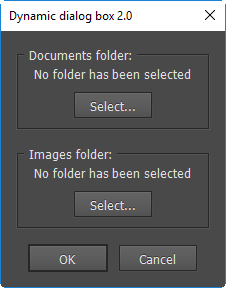
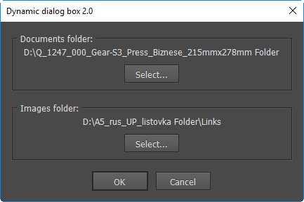
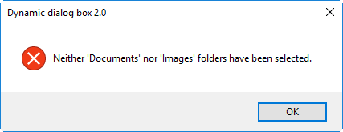

Example of a dynamic “select folder” dialog box
Often in my scripting practice I use a a dynamic dialog box for selecting a folder. The term “dynamic” means that it changes its size depending on the length of the path being selected.
A short path
A longer path

A very long path

If a path is very long, it is trimmed to the last three levels; all the higher levels are replaced with ellipsis. However, you can see the full path in a help tip if you move the cursor to the trims folder path. (see the screen-shot above)
The script “remembers” the last selected folder by saving its path using insertLabel() method on closing the window. At sart, the script tries to restore the path using the extractLabel() method.
If the script is run for the first time or the folder doesn´t exist any more, it displays “No folder has been selected” message

Note that I use a single custom object — gSet — to store multiple setting. It is much more convenient than storing each variable in a separate string. While inserting to label, the object is serialized by toSource() method and while extracting the label, reconstructed by eval() method.
Below is the code:
const gScriptName = "Dynamic dialog box";
const gScriptVersion = "1.0";
var gSet, gGraphicsFolder;
Main() ;
function Main() {
if (app.extractLabel("Kas_" + gScriptName + "_" + gScriptVersion) != "") {
gSet = eval(app.extractLabel("Kas_" + gScriptName + "_" + gScriptVersion));
gGraphicsFolder = new Folder(gSet.graphicsFolder);
}
else {
gSet = {}
}
CreateDialog();
}
function CreateDialog() {
var win = new Window("dialog", gScriptName + " - " + gScriptVersion);
var folderPanel = win.add("panel", undefined, "Graphics folder:");
folderPanel.alignment = "fill";
var stTxt = folderPanel.add("statictext");
if (gGraphicsFolder == undefined || !gGraphicsFolder.exists) {
stTxt.text = "No folder has been selected";
}
else {
stTxt.text = TrimPath(gGraphicsFolder.fsName);
stTxt.helpTip = gGraphicsFolder.fsName;
}
var button = folderPanel.add("button", undefined, "Select...", {name:"set"});
button.onClick = SelectFolder;
function SelectFolder() {
gGraphicsFolder = Folder.selectDialog("Pick a folder with graphics");
if (gGraphicsFolder != null) {
folderPanel.remove(stTxt);
folderPanel.remove(button);
stTxt = folderPanel.add("statictext");
stTxt.text = TrimPath(gGraphicsFolder.fsName);
stTxt.helpTip = gGraphicsFolder.fsName;
button = folderPanel.add("button", undefined, "Select...", {name:"set"});
button.onClick = SelectFolder;
win.layout.layout(true);
}
}
var okCancelGroup = win.add("group");
okCancelGroup.orientation = "row";
var okBtn = okCancelGroup.add("button", undefined, "Ok", {name:"ok"});
var cancelBtn = okCancelGroup.add("button", undefined, "Cancel", {name:"cancel"});
var dialogResult = win.show();
if (dialogResult== 1) {
if (stTxt.text == "No folder has been selected" || gGraphicsFolder == undefined) ErrorExit("No graphics folder has been selected.", true);
if (!gGraphicsFolder.exists) ErrorExit("Folder '" + gGraphicsFolder.displayName + "' doesn't exist.", true);
gSet.graphicsFolder = gGraphicsFolder.fsName;
app.insertLabel("Kas_" + gScriptName + "_" + gScriptVersion, gSet.toSource());
}
else {
exit();
}
}
function TrimPath(path) {
var theFile = new File(path);
if (File.fs == "Macintosh") {
var trimPath = "..." + theFile.fsName.split("/").splice(-3).join("/");
}
else if (File.fs == "Windows" ) {
var trimPath = ((theFile.fsName.split("\\").length > 3) ? "...\\" : "") + theFile.fsName.split("\\").splice(-3).join("\\");
}
return trimPath;
}
Here is another -- a more recent and much more better -- example: it has two 'select a folder' panels, but it's easy to add any number of them. Now the SelectFolder function is global and expects two arguments: button and prompt so we can call it from any button and use a specific prompt: for example, "Pick a folder with images/documents/etc.".


var scriptName = "Dynamic dialog box 2.0",
set,
docsFolder = imgsFolder = null;
CreateDialog();
function CreateDialog() {
GetDialogSettings();
var w = new Window("dialog", scriptName);
// Documents folder
w.p = w.add("panel", undefined, "Documents folder:");
w.p.alignment = "fill";
w.p.st = w.p.add("statictext");
if (docsFolder == null || !docsFolder.exists) {
w.p.st.text = "No folder has been selected";
}
else {
w.p.st.text = TrimPath(docsFolder.absoluteURI);
w.p.st.helpTip = docsFolder.fsName;
}
w.p.bt = w.p.add("button", undefined, "Select...");
w.p.bt.onClick = function() {
docsFolder = SelectFolder(this, "Pick a folder with documents.");
}
// Images folder
w.p1 = w.add("panel", undefined, "Images folder:");
w.p1.alignment = "fill";
w.p1.st = w.p1.add("statictext");
if (imgsFolder == null || !imgsFolder.exists) {
w.p1.st.text = "No folder has been selected";
}
else {
w.p1.st.text = TrimPath(imgsFolder.absoluteURI);
w.p1.st.helpTip = imgsFolder.fsName;
}
w.p1.bt = w.p1.add("button", undefined, "Select...");
w.p1.bt.onClick = function() {
imgsFolder = SelectFolder(this, "Pick a folder with images.");
}
// Buttons
w.g = w.add("group");
w.g.orientation = "row";
w.g.alignment = "center";
w.g.ok = w.g.add("button", undefined, "OK", {name: "ok" });
w.g.ok.onClick = function() { // Use 'children[0]' because the panel is dynamically rebuilt on selecting a new folder so the original references become invalid
if ((w.p.children[0].text == "No folder has been selected" || docsFolder == null) && (w.p1.children[0].text == "No folder has been selected" || imgsFolder == null)) {
alert("Neither 'Documents' nor 'Images' folders have been selected.", scriptName, true);
return;
}
else if (w.p.children[0].text == "No folder has been selected" || docsFolder == null) {
alert("No 'Documents' folder has been selected.", scriptName, true);
return;
}
else if (w.p1.children[0].text == "No folder has been selected" || imgsFolder == null) {
alert("No 'Images' folder has been selected.", scriptName, true);
return;
}
else if (docsFolder.absoluteURI == imgsFolder.absoluteURI) {
alert("The 'Documents' and 'Images' folders should not be the same.", scriptName, true);
return;
}
else { // everythin's OK
w.close(1);
}
}
w.g.cancel = w.g.add("button", undefined, "Cancel", {name: "cancel"});
var showDialog = w.show();
if (showDialog == 1) {
with (set) {
docsFolderPath = (docsFolder != null) ? docsFolder.absoluteURI : "";
imgsFolderPath = (imgsFolder != null) ? imgsFolder.absoluteURI : "";
}
app.insertLabel("Kas_" + scriptName, set.toSource());
Main();
}
}
function SelectFolder(button, prompt) {
var folder = Folder.selectDialog(prompt);
if (folder != null) {
var panel = button.parent;
var window = panel.parent;
var children = panel.children;
var staticText = children[0];
var button = button;
panel.remove(staticText);
panel.remove(button);
staticText = panel.add("statictext", undefined, TrimPath(folder.absoluteURI));
staticText.helpTip = folder.absoluteURI;
button = panel.add("button", undefined, "Select...");
button.onClick = function() {
SelectFolder(this);
}
window.layout.layout(true);
return folder;
}
}
function TrimPath(path) {
var theFile = new File(path);
if (File.fs == "Macintosh") {
var trimPath = "..." + theFile.fsName.split("/").splice(-3).join("/");
}
else if (File.fs == "Windows" ) {
var trimPath = ((theFile.fsName.split("/").length > 3) ? ".../" : "") + theFile.fsName.split("/").splice(-3).join("/");
}
return trimPath;
}
function GetDialogSettings() {
set = eval(app.extractLabel("Kas_" + scriptName));
if (set == undefined) {
set = {docsFolderPath: "", imgsFolderPath: ""};
}
docsFolder = new Folder(set.docsFolderPath);
if (!docsFolder.exists) {
docsFolder = null;
}
imgsFolder = new Folder(set.imgsFolderPath);
if (!imgsFolder.exists) {
imgsFolder = null;
}
return set;
}
function Main() {
$.writeln("Called Main");
}
When the user clicks the OK button, the script checks if both folders are selected and if they are not the same folder. If the conditions are not met, it gives a warning and returns back to the dialog box so the user has either to meet all the three conditions, or click the Cancel button.

Here is a link for downloading the both sample scripts.